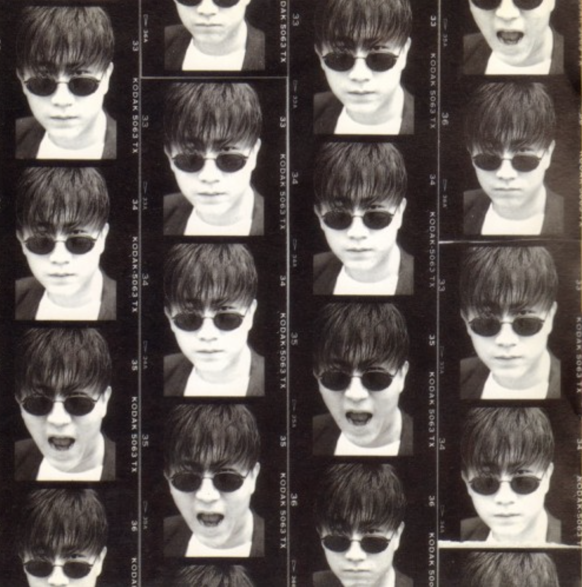
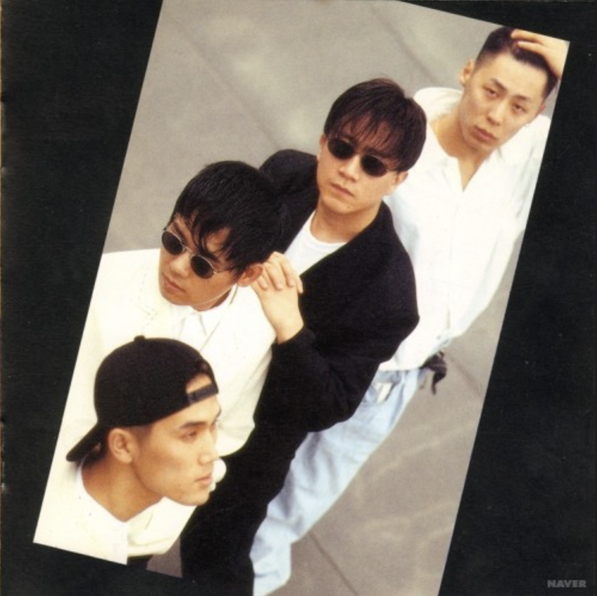
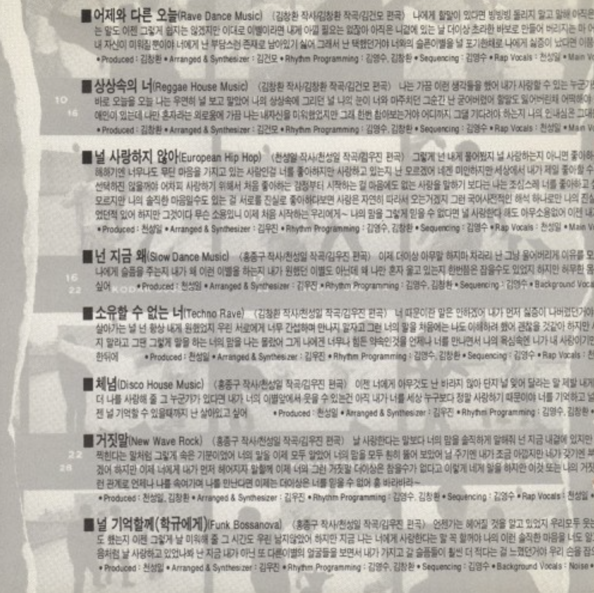
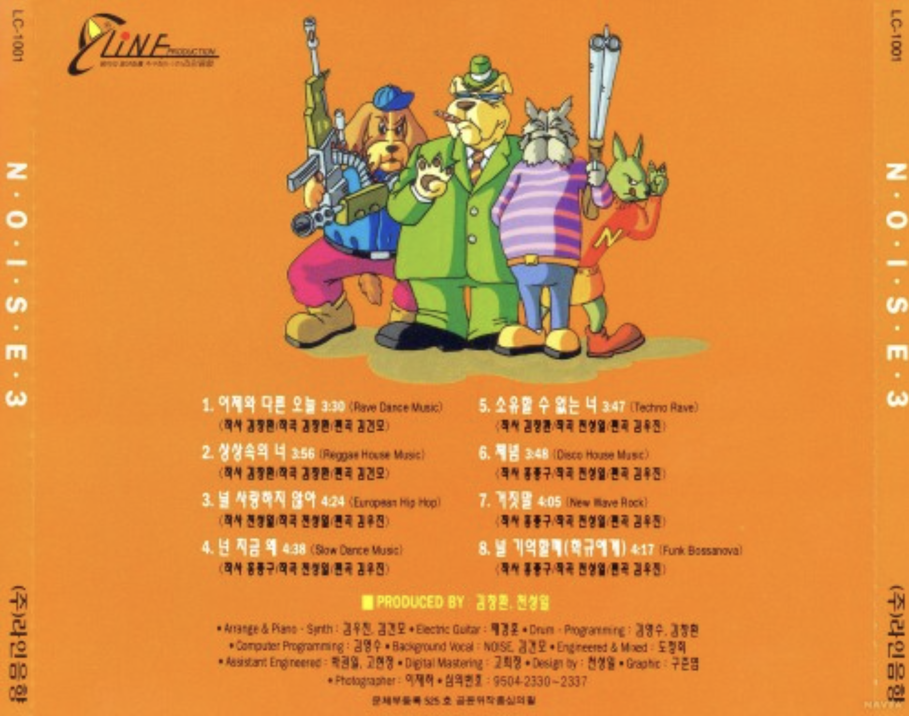
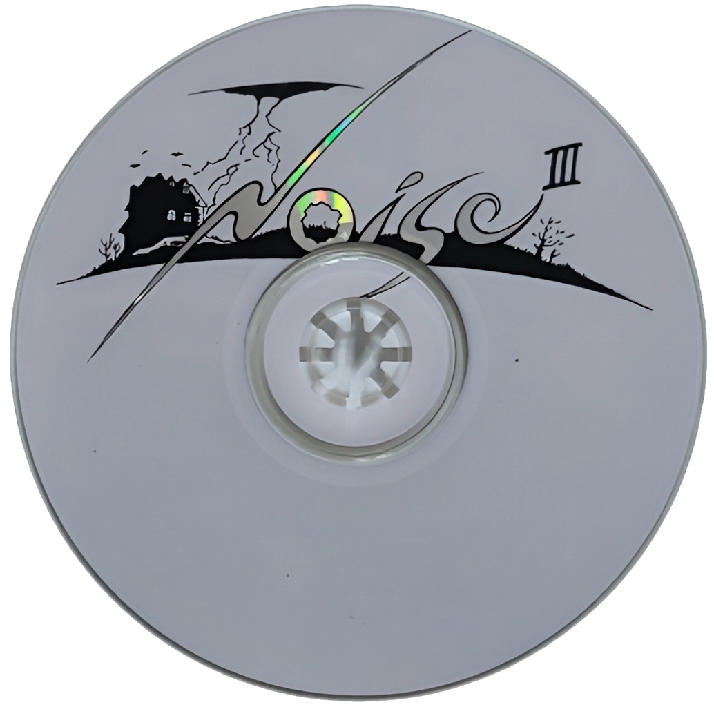

3Rd Revolution
<1995>
가수 소개
노이즈는 1992년 데뷔한 90년대 대표 댄스 그룹으로, 서태지와 아이들·듀스와 함께 X세대 문화를 이끈 팀이다. 보컬 중심의 부드러운 댄스곡으로 큰 사랑을 받았으며, ‘변명’, ‘상상 속의 너’, ‘홀로서기’ 등의 히트곡과 함께 밀리언셀러 기록도 세웠다. 메인보컬 홍종구와 작·편곡을 맡은 천성일을 중심으로 활동했으며, 후반기에는 테크노 기반의 빠른 댄스 음악으로 스타일 변화를 보여주었다.
앨범소개
3Rd Revolution 상상속의 너은 노이즈를 국민 댄스 그룹 반열에 올린 대표작으로, 레게·하우스·디스코 요소를 결합한 경쾌한 사운드가 특징이다. 타이틀곡 ‘상상속의 너’는 각종 음악 차트 1위를 휩쓸며 큰 인기를 얻었고, ‘어제와 다른 오늘’ 역시 함께 히트했다. 프로듀서 김창환과 천성일이 곡 작업을 맡았으며, 김건모가 일부 편곡에 참여해 화제를 모았다.
🎵




